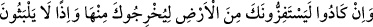
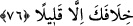
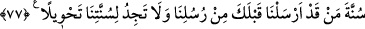

birisinin benzer bir fiili dolayısıyla her iki dünyada çarptırılacağı azâbın kat be-katıyla
cezâlandırırdık. Çünkü önemli bir kişinin hatâsı daha büyüktür. “Sonra bize karşı
kendin için” azâbı senden uzaklaştıracak “bir yardımcı da bulamazdın.”
İmam Sa‘lebî şöyle rivâyet eder: Bu âyetin nüzûlünden sonra Hz. Peygamber (s.a.) :
“Allah’ım, göz açıp kapayacak kadar bir süre bile beni nefsime bırakma.”[124]
buyurdu.
İlâhî, bizi kendi yolunda sâbit kıl.
Bir an bizi nefsimize bırakma.
76. Yine onlar, seni yurdundan çıkarmak için nerdeyse dünyayı başına dar
getirecekler. O takdirde, senin ardından kendileri de fazla kalamazlar.
“Yine onlar,” Mekkeliler “seni yurdundan” içinde bulunduğun Mekke’den “çıkarmak
için nerdeyse dünyayı başına dar getirecekler.” Yâni düşmanlıkları ve hileleriyle seni
tedirgin edip süratle oradan çıkaracaklar. Ya da ayağını kaydıracaklar.
“Seni (yurdundan) çıkaran şehirden daha güçlü nice şehirleri yok ettik.”
(Muhammed, 47/13) âyetinin ve Medine’ye müteveccih olarak Mekke’den çıktığı zaman
Hz. Peygamber (s.a.)’in söylediği “Allah’a yemin olsun ki senin Allah katında en
sevgili ve en değerli belde olduğunu bildiğim halde senden çıkıyorum. Vallahi senin
halkın beni çıkarmasaydı senden çıkmazdım.”[125] hadîsinin gösterdiği gibi Mekkeliler
Hz. Peygamber (s.a.)’i yurdundan çıkarmamışlar mıydı?” dersen, şöyle cevap veririm:
Bu âyetin inmesinden sonra çıkarma işi gerçekleşmedi. Daha sonra Allah Teâlâ’nın
izniyle Hz. Peygamber (a.s.)’ın hicreti gerçekleşti. Müşrikler Mekke’den çıkması için
zorluyorlardı. Nitekim Kâşifî şöyle der: “Mekkeliler, Hz. Peygamber (s.a.)’i çıkarmak
için istişâre ettiler. Onlar: ‘O kadar aşırı düşmanlık gösterin ki o mecburen dışarı
çıksın.’ görüşünde karar kıldılar. İşte bunun üzerine bu âyet indi.”
“O takdirde,” yâni oradan çıkarılacak olursan “senin ardından” yâni senin
çıkarılmandan sonra “kendileri de fazla kalamazlar.” Yâni ancak pek az bir süre
kalırlar. Gerçekten de öyle oldu. Çünkü, Hz. Peygamber (s.a.)’in hicretinden sonra
Bedir’de helâk edildiler.